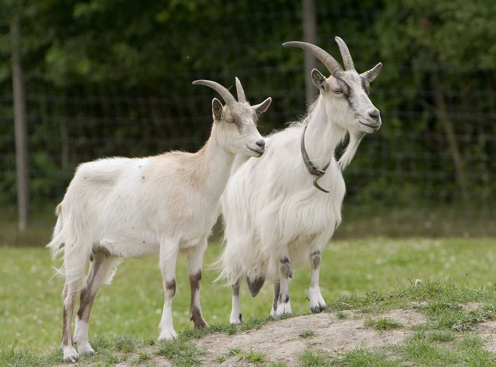

|  | Коза — одно из первых прирученных животных. Одомашнена на Ближнем Востоке, приблизительно 9 тыс. лет назад. Предком домашней козы был дикий безоаровый козёл (Capra hircus aegagrus), до сегодняшнего дня встречающийся от греческих островов в Эгейском море через Малую Азию, Армянское нагорье и Переднюю Азию до Средней Азии. |